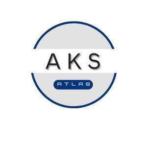

Trade Mark Journal No.2025/024 13 June 2025
UK00004210599 28 May 2025 (3,9,24,25)

- Class 3
- Laundry detergents (powder, liquid, capsules); fabric softeners; bleaches for household/laundry use; stain removers; pre-wash treatments; soaking products; dishwashing detergents (hand and machine); general household surface cleaners (kitchen, bathroom, glass, floor, multi-surface); carpet/upholstery cleaners & shampoos; window cleaners; oven cleaners; toilet cleaners; metal cleaners/polishes; degreasers (for household/industrial cleaning); descalers (e.g., for kettles, irons); scouring powders/pastes; block/bar soaps (laundry, household cleaning); furniture polish (sprays, creams, waxes); floor polish/wax; leather polish/conditioners; shoe polish; car polish/wax; scouring creams/powders (e.g., for sinks, pots); abrasive powders/scouring pastes (for domestic/industrial use); sandpaper grit compounds; emery paper compounds; abrasive preparations incorporated into cloths, paper; perfumed soap; deodorant soap; glycerin soap; liquid hand/body soap; shower gel/bath foam; bath oils/salts/bubbles; shaving soap/cream/foam; perfume; eau de toilette; eau de parfum; cologne; scented body sprays/mists; solid perfumes; foundations; concealers; powders; blush; bronzer; highlighter; eyeshadow; eyeliner; mascara; eyebrow products; lipstick; lip gloss; lip liner; make-up removers; nail varnish (nail polish); nail polish remover; nail care preparations; make-up setting sprays/powders; false eyelashes & adhesive; shampoo; conditioner; hair masks/treatments; hair gels; hair mousses; hair sprays (styling, setting, finishing); hair waxes; hair pomades; hair creams; hair serums; hair oils; hair lotions/tonics; hair colourants/dyes (permanent, semi-permanent, temporary); hair bleaches; perming preparations; straightening preparations; relaxing preparations; anti-dandruff preparations; hairspray (lacquers); facial cleansers (non-medicated); facial toners (non-medicated); facial moisturizers (non-medicated); body lotions (non-medicated); body creams (non-medicated); body oils (non-medicated); body butters (non-medicated); hand creams (non-medicated); sunscreen/suntan preparations (lotions, creams, oils, sprays); after-sun preparations (non-medicated); anti-wrinkle creams (non-medicated); facial masks (non-medicated); exfoliants/scrubs (non-medicated); depilatory creams/waxes; personal deodorants; antiperspirants (roll-ons, sprays, sticks, creams); toothpaste; toothpowder; tooth gels; mouthwashes/breath fresheners (non-medicated); essential oils for personal use; essential oils for perfumery/cosmetics; shaving cream; shaving foam; shaving gel; pre-shave lotions/balms (non-medicated); post-shave lotions/balms (non-medicated); aftershave lotions/balms (perfumed); air fresheners (room sprays, diffusers, gels, plug-ins, scented candles - primary function scenting); perfumed incense sticks.
- Class 9
- Scientific, nautical, surveying, photographic, cinematographic, optical, weighing, measuring, signalling, checking (supervision), life-saving and teaching apparatus and instruments; apparatus and instruments for conducting, switching, transforming, accumulating, regulating or controlling electricity; apparatus for recording, transmission or reproduction of sound or images; magnetic data carriers, recording discs; compact discs, DVDs and other digital recording media; mechanisms for coin-operated apparatus; cash registers, calculating machines, data processing equipment, computers; computer software; fire-extinguishing apparatus; Laboratory apparatus; measuring instruments; testing apparatus; microscopes; telescopes; spectrometers; chromatographs; Electrical converters; transformers; batteries; chargers; circuit boards; electronic chips; semiconductors; sensors; switches; plugs; sockets; control panels; power supplies; fuses; surge protectors; wiring harnesses; Computers; laptops; tablets; servers; computer hardware; computer peripheral devices; monitors; keyboards; mice; printers; scanners; modems; routers; network equipment; USB drives; hard disks; solid-state drives (SSDs); memory cards; bar code readers; smart cards; integrated circuits; Computer software (downloadable and recorded); firmware; mobile applications; operating systems; recorded software; downloadable media; magnetic tapes; optical discs (CDs, DVDs, Blu-ray); USB flash drives; pre-recorded data carriers; downloadable electronic publications; e-books; Telephones; mobile phones; smartphones; radios; televisions; cameras (photographic/cinematographic); camcorders; binoculars; projectors; screens; headphones; earphones; microphones; loudspeakers; sound amplifiers; video recorders; audio players; video players; broadcasting equipment; signal transmitters; signal receivers; satellite dishes; intercoms; GPS devices; navigation instruments; Eyeglasses; sunglasses; contact lenses; lenses (optical); prisms; optical filters; magnifying glasses; optical fibers (for signaling); optical character readers; Weighing scales; measuring tapes; gauges; micrometers; thermometers; barometers; speedometers; tachometers; pedometers; heart rate monitors; blood pressure monitors; smoke detectors; gas detectors; fire alarms; security alarms; metal detectors; breathalyzers; surveying instruments; nautical instruments; signal lanterns; signal buoys; traffic lights; signal flags; electric signs; luminous signs; Life jackets; life buoys; life rafts; fire blankets; breathing apparatus (except for artificial respiration); protective suits for firefighting; safety harnesses; diving suits; anti-theft warning devices; Apparatus for demonstration purposes; simulators for vehicle/aircraft training; electronic whiteboards; electronic teaching machines; interactive educational toys with electronic components; electronic laboratory trainers; Mechanisms for coin-operated machines; cash registers; calculating machines; ticket dispensers; ATM machines; electronic tags for goods; smartwatches; fitness trackers; spectacles cases; battery chargers for vehicles; diagnostic apparatus for vehicles; bicycle computers; sunglasses cases; .
- Class 24
- Adhesive fabric; Adhesive fabric for application by heat; Adhesive fabrics for application by heat; Adhesive labels (Textile -); Adhesive materials in the form of stickers [textile]; Aeronautical balloons (Fabric impervious to gases for - ); Afghans; Afghans [knitted covers]; Apparel fabrics; Artificial silk; Baby blankets; Baby buntings; Badges made of fabric material; Bags for sleeping bags [specifically adapted]; Ballistic resistant fabrics; Balloons (Fabric impervious to gases for aeronautical -); Banners; Banners of textile; Banners of textile or plastic; Banners textile; Bar cloths; Bath gloves; Bath linen; Bath linen, except clothing; Bath mitts; Bath sheets; Bath sheets (towels); Bath towels; Bath wrap towels; Bathroom towels; Beach towels; Bean bag covers; Bed blankets; Bed blankets made of cotton; Bed blankets made of man-made fibres; Bed canopies; Bed clothes; Bed clothes and blankets; Bed coverings; Bed covers; Bed covers of paper; Bed linen; Bed linen and blankets; Bed linen and table linen; Bed linen made of non-woven textile material; Bed linen of paper; Bed pads; Bed quilts; Bed sheets; Bed sheets of paper; Bed sheets of plastic [not being incontinence sheets]; Bed sheets of plastic, not being incontinence sheets; Bed skirts; Bed spreads; Bed throws; Bed valances; Bed warmer covers; Bedroom textile fabrics; Bedsheets; Bedspreads; Billiard cloth; Billiard cloth [baize]; Billiard table baize; Bivouac sacks being covers for sleeping bags; Blackout curtains; Blanket throws; Blankets (Bed -); Blankets for household pets; Blankets for outdoor use; Bolting cloth; Borders (textile wall hangings); Breathable piece goods made of textile materials bonded with plastics; Breathable piece goods made of textile materials bonded with rubber; Breathable waterproof fabrics; Broad woven industrial fabrics; Brocade; Brocade flags; Brocades; Buckram; Bunting; Bunting flags; Bunting of textile or plastic; Calico; Calico cloth (Printed -); Canopies (bed linen); Canopies [covers for beds]; Canopy covers; Canvas; Canvas for embroidery; Canvas for tapestry; Canvas for tapestry or embroidery; Chair backs [textile articles]; Chair covers; Cheese cloth; Chemical fiber base mixed fabrics; Chemical fiber fabrics; Chemical fibre loop knit fabrics; Chemical fibre mixed fabrics; Chenile fabric; Chenille fabric; Adhesive fabric; Adhesive fabric for application by heat; Adhesive fabrics for application by heat; Adhesive labels (Textile -); Adhesive materials in the form of stickers [textile]; Aeronautical balloons (Fabric impervious to gases for -); Afghans; Afghans [knitted covers]; Apparel fabrics; Artificial silk; Baby blankets; Baby buntings; Badges made of fabric material; Bags for sleeping bags [specifically adapted]; Ballistic resistant fabrics; Balloons (Fabric impervious to gases for aeronautical -); Banners; Banners of textile; Banners of textile or plastic; Banners textile; Bar cloths; Bath gloves; Bath linen; Bath linen, except clothing; Bath mitts; Bath sheets; Bath sheets (towels); Bath towels; Bath wrap towels; Bathroom towels; Beach towels; Bean bag covers; Bed blankets; Bed blankets made of cotton; Bed blankets made of man-made fibres; Bed canopies; Bed clothes; Bed clothes and blankets; Bed coverings; Bed covers; Bed covers of paper; Bed linen; Bed linen and blankets; Bed linen and table linen; Bed linen made of non-woven textile material; Bed linen of paper; Bed pads; Bed quilts; Bed sheets; Bed sheets of paper; Bed sheets of plastic [not being incontinence sheets]; Bed sheets of plastic, not being incontinence sheets; Bed skirts; Bed spreads; Bed throws; Bed valances; Bed warmer covers; Bedroom textile fabrics; Bedsheets; Bedspreads; Billiard cloth; Billiard cloth [baize]; Billiard table baize; Bivouac sacks being covers for sleeping bags; Blackout curtains; Blanket throws; Blankets (Bed -); Blankets for household pets; Blankets for outdoor use; Bolting cloth; Borders (textile wall hangings); Breathable piece goods made of textile materials bonded with plastics; Breathable piece goods made of textile materials bonded with rubber; Breathable waterproof fabrics; Broad woven industrial fabrics; Brocade; Brocade flags; Brocades; Buckram; Bunting; Bunting flags; Bunting of textile or plastic; Calico; Calico cloth (Printed -); Canopies (bed linen); Canopies [covers for beds]; Canopy covers; Canvas; Canvas for embroidery; Canvas for tapestry; Canvas for tapestry or embroidery; Chair backs [textile articles]; Chair covers; Cheese cloth; Chemical fiber base mixed fabrics; Chemical fiber fabrics; Chemical fibre loop knit fabrics; Chemical fibre mixed fabrics; Chenile fabric; Chenille fabric; Cheviot fabric; Cheviots [cloth]; Children's blankets; Children's towels; Cloth; Cloth banners; Cloth bunting; Cloth coasters; Cloth doilies; Cloth flags; Cloth for tatami mat edging ribbons; Cloth handkerchiefs; Cloth labels; Cloth napkins; Cloth napkins for removing makeup; Cloth napkins for removing make-up; Cloth pennants; Cloth with a raised nap; Cloths; Cloths for removing makeup; Cloths for washing the body [other than for medical use]; Cloths of non-woven textile material for washing the body [other than for medical use]; Cloths of woven textile material for washing the body [other than for medical use]; Coasters of textile; Coasters [table linen]; Coated fabrics; Coated fabrics for use in the manufacture of leather goods; Coated fabrics for use in the manufacture of luggage; Coated fabrics for use in the manufacture of rainwear; Coated textiles; Coated woven textile materials; Coating fabric; Comforters; Comforters (bedding); Comforters [covers]; Comforters for beds; Composite textile materials; Contour sheets; Contoured mattress covers; Corduroy fabrics; Cot blankets; Cot bumpers [bed linen]; Cot covers; Cot sheets; Cotton base mixed fabrics; Cotton blankets; Cotton cloths; Cotton fabric; Cotton fabrics; Cotton knitted fabric; Counterpanes; Covered rubber yarn fabrics [for textile use]; Coverings for furniture; Coverings for windows; Coverings (Furniture -) of textile; Coverings (Loose -) for furniture; Coverings of plastic for furniture; Coverings of plastics for furniture; Coverings of textile and of plastic for furniture (not fitted); Coverings of textile and of plastic for furniture (unfitted); Coverlets; Coverlets [bedspreads]; Covers (fitted toilet lid -)[fabric]; Covers (Fitted toilet lid -) of fabric; Covers for cushions; Covers for duvets; Covers for eiderdown and duvets; Covers for mattresses; Covers for pillows; Covers for toilet lids of fabric; Covers [loose] for furniture; Covers of textile for toilet seats; Covers of textile for water closets; Crepe cloth; Crepe [fabric]; Crepe fabrics; Crepon; Crib bumpers [bed linen]; Crib canopies; Crib sheets; Curtain fabric; Curtain fabrics; Curtain holders of cloth; Curtain holders of textile material; Curtain holders of textile materials; Curtain holders or tiebacks of textile; Curtain holders (Textile -); Curtain linings; Curtain loops made of textile materials; Curtain loops of textile material; Curtain material; Curtain tie-backs of textile; Curtain valences; Curtaining material being textile piece goods; Curtaining materials; Curtains; Curtains and lace curtains of textiles or plastic; Curtains for showers; Curtains for windows; Curtains made from textile materials; Curtains made of plastics; Curtains made of plastics for use in shower baths; Curtains made of textile fabrics; Curtains made of textile materials; Curtains [made up or in the piece]; Curtains of plastic; Curtains of textile; Curtains of textile material; Curtains of textile or plastic; Curtains of textiles or plastic; Cushion covering materials; Cushion covers; Cushions (Covers for -); Damask; Denim [cloth]; Denim fabric; Diaper changing cloths for babies; Diapered linen; Dimity; Dinner mats of textiles; Dish cloths of textile for drying; Dish towels for drying; Disposable bedding of paper; Disposable bedding of textile; Disposable cloths; Disposable tablecloths of textile; Doilies of textile; Door curtains; Down quilts; Draperies; Draperies [thick drop curtains]; Drapery; Drapes; Drapes in the nature of curtains; Drapes in the nature of curtains made of textile materials; Drink coasters of table linen; Drugget; Dryer fabrics all for use in the paper making industry; Dryer felts all for use in the paper making industry; Dust ruffles; Duvet covers; Duvets; Duvets filled with goose down; Duvets filled with goose feathers; Eiderdown covers; Eiderdowns; Eiderdowns [down coverlets]; Eiderdowns [quilts]; Elastic fabrics for clothing; Elastic woven material; Elastic woven materials; Elastic yarn mixed fabrics; Elasticated woven textile materials; Embroidery fabric; Embroidery (Traced cloth for -); Esparto fabric; Fabric; Fabric bed valances; Fabric cascades; Fabric coated with rubber or plastics; Fabric curtains; Fabric flags; Fabric for footwear; Fabric for manufacturing men's outerwear; Fabric for manufacturing women's outerwear; Fabric for use in the manufacture of bags; Fabric for use in the manufacture of cases; Fabric for use in the manufacture of clothing; Fabric for use in the manufacture of purses; Fabric for use in the manufacture of umbrellas; Fabric for use in the manufacture of wallets; Fabric imitating animal skins; Fabric, impervious to gases, for aeronautical balloons; Fabric linings for clothing; Fabric linings for headgear; Fabric of imitation animal skin; Fabric of imitation animal skins; Fabric on the roll; Fabric place mats; Fabric table runners; Fabric table toppers; Fabric used for orthotic devices; Fabric valances; Fabric valences; Fabrics; Fabrics being textile goods in roll form; Fabrics being textile piece goods; Fabrics being textile piece goods for use in embroidery; Fabrics being textile piece goods for use in manufacture; Fabrics being textile piece goods for use in patchwork; Fabrics being textile piece goods for use in tapestry; Fabrics being textile piece goods made of mixtures of fibres; Fabrics covered with motifs to be embroidered; Fabrics for industrial use; Fabrics for interior decorating; Fabrics for making curtains; Fabrics for manufacturing garden furniture; Fabrics for manufacturing sun protectors; Fabrics for manufacturing swimming pool covers; Fabrics for manufacturing tarpaulins; Fabrics for manufacturing tents; Fabrics for sale in kit form for making toy monsters; Fabrics for shirts; Fabrics for textile use; Fabrics for the manufacture of furnishings; Fabrics for use as linings in clothing; Fabrics for use in covering armchairs; Fabrics for use in making diapers; Fabrics for use in making incontinence pads; Fabrics for use in making jerseys; Fabrics for use in the manufacture of exterior coverings for chairs; Fabrics made from acrylic, other than for insulation; Fabrics made from artificial fibres [for insulation]; Fabrics made from artificial fibres [other than for insulation]; Fabrics made from ceramic fibres, other than for insulation; Fabrics made from cotton, other than for insulation; Fabrics made from linen, other than for insulation; Fabrics made from natural fibres, other than for insulation; Fabrics made from nylon, other than for insulation; Fabrics made from polyester, other than for insulation; Fabrics made from silk, other than for insulation; Fabrics made from synthetic fibres [other than insulation]; Fabrics made from synthetic threads; Fabrics made from synthetic yarns; Fabrics made from wool, other than for insulation; Fabrics made of mixed synthetic and natural fibres, other than for insulation; Fabrics of carbon fibre, other than for insulation; Fabrics of chemically produced fibres, other than for insulation; Fabrics of inorganic fibres, other than for insulation; Fabrics of man-made fibres being textile goods in piece form; Fabrics of organic fibres, other than for insulation; Fabrics [piece goods]; Fabrics [textile piece goods] made of carbon fibre; Fabrics woven from ceramic fibres, other than for insulation; Face cloths; Face cloths of textile; Face cloths of towelling; Face flannels in the form of gloves; Face flannels of textile; Face towels; Face towels [made of textile materials]; Face towels of textile; Face towels of textiles; Felt; Felt cloth; Felt for use by papermakers; Felt pennants; Felt piece goods; Felts; Fiberglass fabric for textile use; Fiberglass fabrics for textile use; Fiberglass fabrics, for textile use; Fibre fabrics for the manufacture of the exterior coverings of furniture; Fibre fabrics for use in the manufacture of articles of clothing; Fibre fabrics for use in the manufacture of linings of bags; Fibre fabrics for use in the manufacture of linings of shoes; Fibreglass fabrics for textile use; Filter fibers [textile]; Filtering cloth; Filtering materials of textile; Filters made of textile materials; Fireproof upholstery fabrics; Fire-retardant textile shower curtains; Fitted bed sheets; Fitted toilet covers [fabric]; Fitted toilet lid covers [made of fabric or fabric substitutes]; Fitted toilet lid covers of fabric; Fitted toilet seat covers of textile; Flags and pennants of textile; Flags, not of paper; Flags of textile; Flags of textile or plastic; Flame resistant fabrics; Flame retardant fabrics [other than asbestos]; Flannel; Flannel [fabric]; Flannel (Sanitary -); Flat bed sheets; Flax cloth; Flax fabrics; Fleece made from copolymers; Fleece made from polyester; Fleece made from polypropylene; Flocked fabrics; Fly netting of plastic; Foils of plastics for the manufacture of disposable capes; Foils of plastics for the manufacture of disposable clothes; Foils of plastics for the manufacture of disposable linen; Footwear (Fabric for -); Forming fabrics all for use in the paper making industry; Forming felts all for use in the paper making industry; Foulard [fabric]; Frieze; Frieze [cloth]; Friezes of textile; Friezes [textile wall hangings]; Furnishing and upholstery fabrics; Furnishing fabrics; Furnishing fabrics being textile piece goods; Furnishing fabrics in the piece; Furniture coverings made of plastic materials; Furniture coverings of plastic; Furniture coverings of textile; Furniture coverings (unfitted); Furniture (Loose covers for -); Fustian; Futon quilts; Gauze [cloth]; Gauze fabric; Gift wrap of fabric; Glass cloths [towels]; Glass-cloth [towels]; Golf towels; Grid-type fabrics; Gummed cloth, other than for stationery; Gummed cloth, other than for stationery purposes; Gummed waterproof cloth; Haircloth [sackcloth]; Hand spun silk fabrics; Hand towels; Hand towels of textile; Handcrafted textile wall hangings; Handkerchiefs of textile; Handkerchiefs of textiles; Hand-towels made of textile fabrics; Hat linings, of textile, in the piece; Heat formable non-woven textile materials; Heat resistant fabrics [other than for insulation]; Heat-activated adhesive fabrics; Hemp base mixed fabrics; Hemp cloth; Hemp fabric; Hemp yarn fabrics; Hemp-cotton mixed fabrics; Hemp-silk mixed fabrics; Hemp-wool mixed fabrics; Hessian; Honeycomb materials [textiles]; Hooded towels; Household cloths for drying dishes; Household cloths for drying glasses; Household linen; Household linen, including face towels; Household linens; Household textile articles; Household textile articles mad from non-woven materials; Household textile goods; Household textile piece goods; Household textiles; Individual place mats made of textile; Indoor and outdoor curtains; Industrial fabrics; Infants' bed linen; Inlay materials of non-woven fabrics; Inorganic fiber mixed fabrics; Inorganic fibre mixed fabrics; Insect protection nets; Insecticide-treated mosquito nets; Interfacings; Interior decoration fabrics; Interlining; Interlining materials; Interlinings made of non-woven fabrics; Iron-on cloth labels; Japanese ceremonial wrapping cloth (Fukusa); Japanese cotton towels (tenugui); Japanese general wrapping cloth (Furoshiki); Jersey [fabric]; Jersey fabrics for clothing; Jersey material [fabric]; Jute cloth; Jute fabric; Jute fabrics; Kashmir fabric; Kit comprised of fabrics for making quilts; Kitchen and table linens; Kitchen linen; Kitchen towels; Kitchen towels of cloth; Kitchen towels of textile; Kitchen towels [textile]; Knit lace fabrics; Knitted elastic fabrics for bodices; Knitted elastic fabrics for gymnastic dresses; Knitted elastic fabrics for ladies underwear; Knitted elastic fabrics for sportswear; Knitted fabric; Knitted fabrics; Knitted fabrics of chemical-fiber yarn; Knitted fabrics of cotton yarn; Knitted fabrics of silk yarn; Knitted fabrics of wool yarn; Labels [cloth]; Labels made of textile materials; Labels of cloth; Labels of textile; Labels of textile for bar codes; Labels of textile for identifying clothing; Labels (textile); Labels (Textile -) for identifying clothing; Labels (Textile -) for identifying linen; Labels (Textile -) for marking clothing; Labels (Textile -) for marking linen; Lace curtains; Lace fabrics; Lace table mats not made of paper; Laminated fabrics; Laminated textile piece goods having insulating properties; Lap blankets; Lap rugs; Lap-robes; Large bath towels; Linen; Linen (Bed -); Linen cloth; Linen (Diapered - ); Linen [fabric]; Linen for household purposes; Linen for the bed; Linen (Household - ); Linen lining fabric for shoes; Linens; Lingerie fabric; Lingerie fabrics; Lining fabric for footwear; Lining fabric for shoes; Lining fabrics; Lining fabrics for shoes; Lining fabrics of textile in the piece; Linings (Hat -), of textile, in the piece; Linings [textile]; Loden cloth; Loop knit fabrics; Loose coverings for furniture; Loose covers for furniture; Loose covers for garden furniture; Loose covers made of textile materials for furniture; Loose furniture coverings; Make-up (Napkins for removing -) [cloth]; Make-up pads of textile; Make-up pads of textile for removing make-up; Make-up removal cloths [textile], other than impregnated with cosmetics; Make-up removal cloths [textile], other than impregnated with toilet preparations; Make-up removal towels [textile] other than impregnated with cosmetics; Make-up removal towels [textile] other than impregnated with toilet preparations; Make-up removal wipes [textile] other than impregnated with cosmetics; Make-up removal wipes [textile] other than impregnated with toilet preparations; Marabouts [cloth]; Markers [labels] of cloth for textile fabrics; Material (Textile -); Materials for making into clothing; Materials for soft furnishings; Materials for upholstery; Materials for use in filtration [textile]; Materials for use in making clothes; Materials (Textile -) for use in the manufacture of footwear; Materials (Textile -) for use in the manufacture of insoles; Materials (Textile - ) for use in the manufacture of linings for footwear; Materials (Textile -) for use in the manufacture of soles; Mats [coasters] of textile; Mats (Drip -) of textile for glasses; Mats of linen; Mats (Place -), not of paper; Mattress covers; Mattress slips [other than incontinence]; Mesh-woven fabrics; Metal fiber fabrics; Mitts for washing the body; Mitts made of non-woven fabric for washing the body; Mitts (Washing - ); Mixed fiber fabrics; Mole skin; Moleskin [fabric]; Moquettes [curtains]; Moquettes [fabric]; Mosquito nets; Multiple-ply antistatic fabrics; Mural hangings [textile]; Muslin; Muslin fabric; Nap raised cloth; Napery of textile; Napery [textile]; Napkin liners of textile; Napkins of textile (Table -); Narrow woven fabrics; Net curtains; Nets (Mosquito -); Nightdress cases of textile; Non-woven cloth; Non-woven fabric; Nonwoven fabrics; Non-woven fabrics for use with linings; Non-woven fabrics for use with paddings; Non-woven fabrics in the form of blanks for use in manufacture; Non-woven fabrics in the form of rolls for use in manufacture; Non-woven fabrics in the form of sheeting for use in manufacture; Non-woven fabrics in the form of sheets for use in manufacture; Non-woven fabrics made substantially of paper; Non-woven fabrics of natural fibres; Non-woven fabrics of synthetic fibres; Non-woven felts; Non-woven piece goods; Non-woven reinforcing fabrics; Non-woven textile articles; Non-woven textile fabrics; Non-woven textile fabrics for use as interlinings; Non-woven textile piece goods; Non-woven textiles; Nylon fabric; Nylon flags; Oil cloths; Oilcloth; Oilcloth for use as tablecloths; Padded coverings [hangings of textile] for existing walls; Paper pillowcases; Paper yarn fabrics for textile use; Patterned textiles for use in embroidery; Pelmets; Pennants [flags], other than of paper; Pennants of textile; Picnic blankets; Piece goods made of non-woven plastic material; Piece goods made of textile materials bonded with plastics; Piece goods made of textile materials bonded with rubbers; Piece goods made of woven plastic material; Piece goods (Textile - ); Piled fabrics; Pillow cases; Pillow covers; Pillow shams; Pillow slips; Pillowcases; Pillowcases [pillow slips]; Pillowcovers; Place mats, not of paper; Place mats of textile; Place mats of textile material; Plastic banners; Plastic bunting; Plastic flags; Plastic material [substitute for fabrics]; Plastic material substitutes for fabric; Plastic material [substitutes for fabrics]; Plastic pennants; Plastic reinforced fabrics; Plastic substitutes for fabrics; Plastic table cloths; Plastic woven textile materials for use in agriculture; Pleated curtains; Pleated shades; Pocket handkerchiefs of textile; Polyester fabric; Polyester textiles; Polymer coated fabrics; Polypropylene spunbonded non-woven textile fabrics; Prayer cloth; Precut fabrics for needlecraft; Press fabrics all for use in the paper making industry; Press felt; Press felts all for use in the paper making industry; Printed calico cloth; Printed fabrics; Printed textile labels; Printed textile piece goods; Printers' blankets of textile; Printing blankets of textile material; Protective coverings for furniture [loose]; Protective covers for furniture [loose]; Protective loose covers for mattresses and furniture; Quilt bedding mats; Quilt covers; Quilted blankets [bedding]; Quilts; Quilts filled with down; Quilts filled with feathers; Quilts filled with half down; Quilts filled with stuffing materials; Quilts filled with synthetic stuffing materials; Quilts made of terry cloth; Quilts of textile; Quilts of towel; Rags for paper making; Ramie fabric; Ramie fabrics; Rayon fabric; Ready made curtains; Ready made curtains of plastics; Ready made curtains of textiles; Receiving blankets; Regenerated fiber yarn fabrics; Reinforced fabrics [textile]; Removable covers of textile for electronic apparatus [not fitted or shaped]; Replacement seat covers [loose] for furniture; Resin impregnated textile fabrics; Roll felt; Rubber covered yarn fabrics; Rubberised cloth; Rubberised fabrics; Rubberized cloth; Rubberized cloths; Rubberized textile fabrics; Runners (Table -); Runners [textile] for table tops; Sackcloth; Sail cloth; Sanitary flannel; Satin; Screen printing fabrics for the glass industry; Seat covers [loose] for furniture; Self-adhesive cloth labels; Semi-synthetic fiber fabrics; Serviettes of textile; Shams; Shams (Pillow -); Sheets of sailcloth for screening; Sheets [textile]; Shirt fabrics; Shirtings; Shower curtains; Shower curtains made of plastic material; Shower curtains of textile or plastic; Shower room curtains; Shrouds; Silk base mixed fabrics; Silk bed blankets; Silk blankets; Silk cloth; Silk [cloth]; Silk fabric for printing patterns; Silk fabrics; Silk fabrics for furniture; Silk fabrics for printing patterns; Silk filled quilts; Silk-cotton mixed fabrics; Silk-wool mixed fabrics; Sleeping bag liners; Sleeping bag sheet liners; Sleeping bags; Sleeping bags for babies; Sleeping bags for camping; Sleeping bags [sheeting]; Small curtains made of textile materials; Sofa blankets; Sofa covers; Soft furnishings; Soft pelmets; Sponge cloths for textile use; Sponge cloths [textile piece goods]; Spun silk fabrics; Streamers of textile; Stretch canvas for embroidery; Substitutes for textiles; Suit lengths; Suiting materials [textile]; Swaddling blankets; Swags being window treatments; Swags [curtains]; Swags [window treatments]; Synthetic fiber fabric; Synthetic fiber fabrics; Synthetic textile piece goods; Table cloth of textile; Table cloths; Table cloths made of textile; Table cloths not of paper; Table cloths, not of paper; Table cloths of textile; Table coverings [not of paper]; Table covers; Table covers [not of paper]; Table covers of damask; Table covers of non-woven textile fabrics; Table covers of plastic; Table linen; Table linen, not of paper; Table linen of textile; Table mats made of textile materials; Table mats, not of paper; Table mats (not of paper); Table napkins of textile; Table place setting mats of textile; Table runners; Table runners not of paper; Table runners, not of paper; Table runners of plastic; Table runners of textile; Tablecloths, not of paper; Tablecloths of textile; Tablecloths of textiles; Tablemats, not of paper; Tablemats of textile; Taffeta; Taffeta [cloth]; Tags of textile for attachment to clothing; Tags of textile for attachment to linen; Tapestries of textile; Tapestries [wall hangings], of textile; Tapestry [wall hangings], of textile; Tartan bolting cloth; Tartan piece goods; Tartan travelling rugs; Tea cloths; Tea towels; Tensioning fabrics for upholstery; Tensioning webbing for upholstery; Terry; Terry linen; Terry towels; Textile coasters; Textile covers for duvets; Textile covers [loose] for furniture; Textile curtain pelmets; Textile exercise towels; Textile fabric; Textile fabric of animal skins imitations; Textile fabric piece goods for the manufacture of upholstered furniture; Textile fabric piece goods for use in the manufacture of clothing; Textile fabrics; Textile fabrics for lingerie; Textile fabrics for making into blankets; Textile fabrics for making into clothing; Textile fabrics for making into linens; Textile fabrics for making up into household textile articles; Textile fabrics for the manufacture of clothing; Textile fabrics for use in manufacture; Textile fabrics for use in the manufacture of bedding; Textile fabrics for use in the manufacture of beds; Textile fabrics for use in the manufacture of curtains; Textile fabrics for use in the manufacture of furniture; Textile fabrics for use in the manufacture of pillowcases; Textile fabrics for use in the manufacture of sheets; Textile fabrics for use in the manufacture of sportswear; Textile fabrics for use in the manufacture of towels; Textile fabrics for use in the manufacture of wall coverings; Textile fabrics in the piece; Textile face towels; Textile filter materials; Textile flags used for place settings; Textile goods, and substitutes for textile goods; Textile goods for making headshawls and yashmaghs; Textile goods for use as bedding; Textile hair drying towels; Textile handkerchiefs; Textile handkerchieves; Textile labels; Textile linings in the piece; Textile material; Textile materials for use as window coverings; Textile materials for use in the manufacture of blinds; Textile materials to be used in making blinds; Textile napkins; Textile napkins for removing makeup; Textile napkins [table linen]; Textile piece goods; Textile piece goods for clothing; Textile piece goods for furnishing purposes; Textile piece goods for making bedding covers; Textile piece goods for making curtains; Textile piece goods for making cushion covers; Textile piece goods for making into clothing; Textile piece goods for making-up into clothing; Textile piece goods for making-up into towels; Textile piece goods for use in the manufacture of boots; Textile piece goods for use in the manufacture of industrial filters; Textile piece goods for use in the manufacture of protective clothing; Textile piece goods for use in the manufacture of shoes; Textile piece goods made of cotton; Textile piece goods made of plastics materials; Textile piece goods (Polyurethane coated -) for making waterproof clothing; Textile place mats; Textile printers' blankets; Textile serviettes; Textile sheets; Textile smallwares [table linen]; Textile substitute materials made from synthetic materials; Textile tablecloths; Textile tissues; Textile used as lining for clothing; Textiles; Textiles and substitutes for textiles; Textiles for digital printing; Textiles for food wrapping; Textiles for furnishings; Textiles for interior decorating; Textiles for making articles of clothing; Textiles for making up into articles of clothing; Textiles for upholstery; Textiles for use in the manufacture of ships sails; Textiles impervious to water but permeable to moisture; Textiles in the form of window furnishings; Textiles made of cotton; Textiles made of flannel; Textiles made of linen; Textiles made of satin; Textiles made of synthetic materials; Textiles made of velvet; Textiles made of wool; Textiles treated with a fire resistant finish; Textiles treated with a flame resistant finish; Throws; Throws (furniture coverings); Tick [linen]; Ticks (mattress and pillow coverings); Ticks [mattress covers]; Tissues being textile piece goods; Toilet seat covers; Toilet seat covers of textile; Towel sheet; Towelling coverlets; Towelling material; Towelling [textile]; Towelling [textile] adapted for use in dispensers; Towels; Towels made of textile materials; Towels of textile; Towels [of textile]; Towels of textile featuring American football team logos; Towels of textile sold in pack form; Towels of textiles; Towels [textile]; Towels [textile] for kitchen use; Towels [textile] for the beach; Towels [textile] for use in connection with babies; Towels [textile] for use in connection with toddlers; Traced cloth for embroidery; Traced cloths for embroidery; Travellers' rugs; Travelling blankets; Travelling rugs; Travelling rugs [lap robes]; Trellis [cloth]; Tricot quilts; True hemp fabrics; Tulle; Tulle for dressmaking; Tulle for hatmaking; Turban towels for drying hair; Turkish towel; Turkish towels; Underblankets; Unfitted fabric furniture covers; Unfitted fabric slipcovers for furniture; Upholstery fabrics; Upholstery materials; Valance sheets; Valanced bed covers; Valanced bed sheets; Valances; Valances for beds; Valances [textile draperies]; Valence linen; Vapour permeable fabrics; Vapour permeable plastic textile; Velours for furniture; Velvet; Vinyl cloth; Vinyl curtains; Viscose textiles; Wall decorations of textile; Wall fabrics; Wall hangings; Wall hangings of silk; Wall hangings of textile; Wall plaques of textile; Wash gloves; Washing gloves; Washing mitts; Washing mitts for toilet use; Waste cotton fabrics; Water breathable fabrics; Water resistant fabrics; Water vapour permeable textiles; Waterproof cloths; Waterproof fabric; Waterproof fabrics; Waterproof fabrics for use in the manufacture of gloves; Waterproof fabrics for use in the manufacture of hats; Waterproof fabrics for use in the manufacture of jackets; Waterproof fabrics for use in the manufacture of trousers; Waterproof textile fabrics; Waterproofed textile piece goods; Window covering products made of textile material; Window curtains; Window furnishing fabrics; Wool base mixed fabrics; Wool loop knit fabrics; Wool yarn fabrics; Wool-cotton mixed fabrics; Woolen blankets; Woolen cloth; Woolen fabric; Woollen blankets; Woollen cloth; Woollen fabric; Woollen fabrics; Woollen fabrics for use in the manufacture of coats; Woollen fabrics for use in the manufacture of jackets; Woollen fabrics for use in the manufacture of suits; Woollen fabrics for use in the manufacture of trousers; Worsted fabrics; Woven cloth with breathable polyurethane coating; Woven cloth with breathable polyurethane coating for water proof garments; Woven cloth with breathable polyurethane coating sold in the piece; Woven fabrics; Woven fabrics for armchairs; Woven fabrics for cushions; Woven fabrics for furniture; Woven fabrics for making up into articles of clothing; Woven fabrics for sofas; Woven fabrics for use in the manufacture of clothing for use in clean rooms; Woven fabrics imitating animal skin; Woven fabrics imitating leather; Woven felt; Woven furnishing fabrics; Woven labels; Woven linen fabrics; Woven silk fabrics; Woven textiles having protective properties against electromagnetic rays; Zephyr [cloth]; Zephyr fabric; Textile fabrics for use in the manufacture of furniture; Textile fabrics for use in the manufacture of towels; Fabrics for manufacturing tarpaulins; Handkerchiefs of textiles; Handkerchiefs of textile; Textile handkerchiefs; Textile fabrics for use in manufacture; Textile materials for use in the manufacture of blinds; Bedsheets; Bedsheets of leather; Bed linen and blankets; Bed linen of paper; Silk bed blankets; Bed linen; Linen for the bed; Linen (Bed -); Bed clothes and blankets; Linen cloth; Valanced bed sheets; Cot bumpers [bed linen]; Bed sheets of paper; Crib bumpers [bed linen]; Canopies (bed linen); Bed clothes; Fabric bed valances; Bed sheets of plastic [not being incontinence sheets]; Bed sheets of plastic, not being incontinence sheets; Cloth handkerchiefs; Kitchen towels of cloth; Pillowcases [pillow slips]; Blankets (Bed -); Bed blankets; Fitted bed sheets; Gauze [cloth]; Towel sheet; Bed linen and table linen; Bed blankets made of cotton; Cot sheets; Face cloths of towelling; Linen [fabric]; Shower curtains of textile or plastic; Bed covers of paper; Fabric curtains; Crib sheets; Infants' bed linen; Flat bed sheets; Diapered linen; Linen (Diapered -); Crepe cloth; Textile face towels; Face towels of textile; Silk cloth; Silk [cloth]; Cloth; Fitted toilet covers [fabric]; Bed linen made of non-woven textile material; Curtains of plastic; Valance sheets; Paper pillowcases; Ticks (mattress and pillow coverings); Bath sheets (towels); Gauze fabric; Silk blankets; Sofa blankets; Curtains and lace curtains of textiles or plastic; Valanced bed covers; Hooded towels; Curtains of textile or plastic; Cloth napkins; Quilted blankets [bedding]; Cloth banners; Cloth bunting; Bed valances; Shower room curtains; Bed coverings; Foulard [fabric]; Quilts of towel; Taffeta [cloth]; Curtain fabric; Face towels of textiles; Linen; Cloth doilies; Woolen cloth; Flannel [fabric]; Woollen cloth; Bed covers; Denim [cloth]; Printed calico cloth; Calico cloth (Printed -); Sheets of sailcloth for screening; Cotton cloths; Household linen, including face towels; Fire-retardant textile shower curtains; Japanese cotton towels (tenugui); Curtains of textiles or plastic; Pillow covers; Cotton blankets; Duvet covers; Muslin fabric; Bed quilts; Face towels; Shower curtains made of plastic material; Non-woven cloth; Mattress covers; Woven linen fabrics; Cloth for tatami mat edging ribbons; Cot blankets; Jute cloth; Bathroom towels; Chenile fabric; Disposable bedding of paper; Towels of textile; Towels [of textile]; Towels [textile]; Covers (fitted toilet lid -)[fabric]; Fitted toilet lid covers of fabric; Covers (Fitted toilet lid -) of fabric; Pillow shams; Shams (Pillow -); Pillow slips; Pillow cases; Covers for pillows; Quilt bedding mats; Bed pads; Pillowcases; Covers for eiderdown and duvets; Comforters (bedding); Bed throws; Sleeping bag sheet liners; Cushion covers; Covers for cushions; Cushions (Covers for -); Sleeping bag liners; Woven fabrics for cushions; Mattress slips [other than incontinence]; Ticks [mattress covers]; Quilt covers; Covers for mattresses; Chenille fabric; Baby blankets; Canvas; Canvas for tapestry; Canvas for embroidery; Canvas for tapestry or embroidery; Stretch canvas for embroidery; Tapestry [wall hangings], of textile; Moleskin [fabric]; Linen lining fabric for shoes; Jute fabric; Mural hangings [textile]; Fabrics being textile piece goods for use in tapestry; Woven cloth with breathable polyurethane coating sold in the piece; Handcrafted textile wall hangings; Textile piece goods (Polyurethane coated -) for making waterproof clothing; Cheese cloth; Flax cloth; Hemp cloth; Loden cloth; Vinyl cloth; Table cloth of textile; Billiard cloth; Rubberized cloth; Rubberised cloth; Cloth flags; Prayer cloth; Cloth coasters; Sail cloth; Trellis [cloth]; Bolting cloth; Cloth labels; Labels of cloth; Labels [cloth]; Marabouts [cloth]; Sponge cloths [textile piece goods]; Zephyr [cloth]; Frieze [cloth]; Cloth pennants; Billiard cloth [baize]; Cheviots [cloth]; Quilts made of terry cloth; Tartan bolting cloth; Hessian; Jute fabrics; Esparto fabric; Bunting of textile or plastic; Plastic bunting; Woollen fabric; Oilcloth; Rubberised fabrics; Woolen fabric; Nylon fabric; Muslin; Towelling [textile]; Doilies of textile; Tags of textile for attachment to linen; Fabrics woven from ceramic fibres, other than for insulation; Woollen fabrics; Non-woven fabric; Cheviot fabric; Bunting; Textile serviettes; Serviettes of textile; Textile curtain pelmets; Woven fabrics for armchairs; Terry linen; Non-woven fabrics of synthetic fibres; Oilcloth for use as tablecloths; Non-woven fabrics of natural fibres; Table covers of non-woven textile fabrics; Fibreglass fabrics for textile use; Woven fabrics for sofas; Fabrics of organic fibres, other than for insulation; Adhesive tags of textile for bags; Fabrics made from linen, other than for insulation; Fabric; Textile fabric; Embroidery fabric; Cotton fabric; Polyester fabric; Denim fabric; Rayon fabric; Knitted fabric; Crepe [fabric]; Fabric valances; Cotton knitted fabric; Adhesive fabric; Hemp fabric; Jersey [fabric]; Lingerie fabric; Fabrics; Fabric valences; Waterproof fabric; Silk fabric for printing patterns; Woven fabrics; Fabric linings for clothing; Ramie fabric; Coating fabric; Elastic woven fabrics; Jersey material [fabric]; Fiberglass fabric for textile use; Moquettes [fabric]; Cotton fabrics; Lace fabrics; Fabric for footwear; Footwear (Fabric for - ); Corduroy fabrics; Lining fabrics of textile in the piece; Textile fabrics; Upholstery fabrics; Textile fabrics in the piece; Non-woven fabrics; Zephyr fabric; Woven silk fabrics; Silk fabrics; Shirt fabrics; Non-woven textile fabrics; Elastic fabrics for clothing; Fabric flags; Crepe fabrics; Fabrics being textile piece goods for use in patchwork; Lining fabric for footwear; Lining fabric for shoes; Woven fabrics for furniture; Wool yarn fabrics; Knitted fabrics of cotton yarn; Knitted fabrics; Hemp yarn fabrics; Knit lace fabrics; Knitted elastic fabrics for bodices; Fabrics being textile piece goods for use in embroidery; Fabric for use in the manufacture of clothing; Knitted fabrics of silk yarn; Non-woven textile fabrics for use as interlinings; Synthetic fiber fabric; Curtain fabrics; Rubberized textile fabrics; Elastic yarn mixed fabrics; Lining fabrics; Paper yarn fabrics for textile use; Fabric cascades; Kashmir fabric; Covered rubber yarn fabrics [for textile use]; Tensioning fabrics for upholstery; Reinforced fabrics [textile]; Curtains made of textile fabrics; Waterproof textile fabrics; Non-woven fabrics for use with linings; Silk fabrics for furniture; Silk fabrics for printing patterns; Fabric linings for headgear; Knitted elastic fabrics for sportswear; Textile fabrics for lingerie; Fabrics being textile piece goods; Textile fabrics for use in the manufacture of curtains; Knitted fabrics of wool yarn; Textile fabrics for use in the manufacture of pillowcases; Bath sheets; Contour sheets; Non-woven fabrics in the form of sheets for use in manufacture.
- Class 25
- Shirts; T-shirts; sweatshirts; blouses; tunics; tank tops; polo shirts; sweaters; jerseys; hoodies; trousers; jeans; shorts; skirts; leggings; tracksuit bottoms; culottes; coats; jackets; parkas; raincoats; windbreakers; overcoats; blazers; suits; underpants; briefs; boxers; bras; panties; lingerie; pyjamas; nightdresses; nightshirts; dressing gowns; bathrobes; tracksuits; jogging suits; gym wear; cycling shorts; leotards; uniforms; school uniforms; military uniforms; workwear; overalls; boiler suits; aprons; bibs; smocks; babygrows; rompers; children's clothing; nappies/diapers made of textile; kimonos; saris; sarongs; dirndls; kaftans; socks; stockings; tights; pantyhose; swimwear; bathing suits; bikinis; swim trunks; beach cover-ups. Footwear: Shoes; boots; sandals; slippers; trainers; high heels; loafers; flip-flops; football boots; climbing boots; shoelaces; insoles; heelpieces. Headgear: Hats; caps; beanies; berets; headbands; bonnets; fashion helmets. Accessories: Ties; bow ties; scarves; mufflers; cravats; neckerchiefs; gloves; mittens; fingerless gloves; clothing belts; sashes; bridal veils; fashion veils; shawls; stoles. .
AKS ATLAS LTD